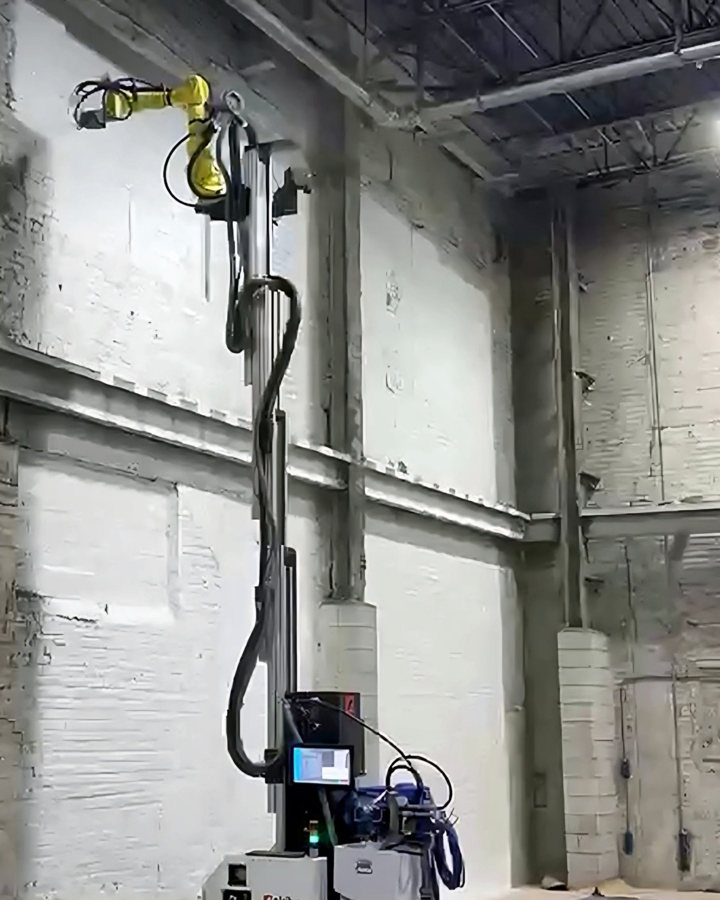
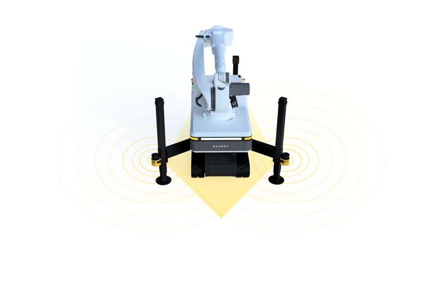
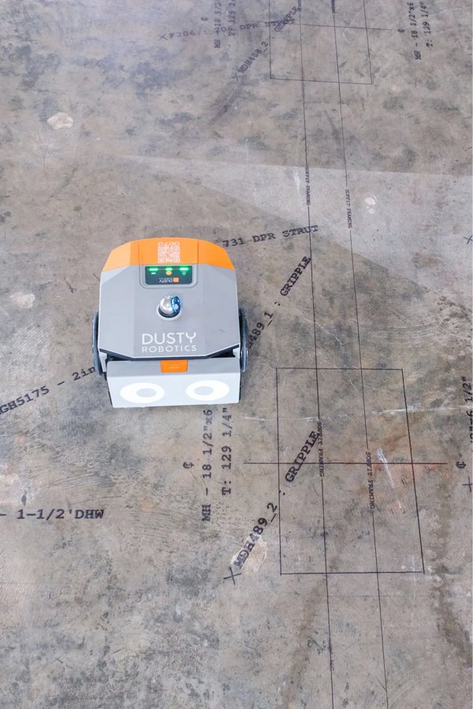
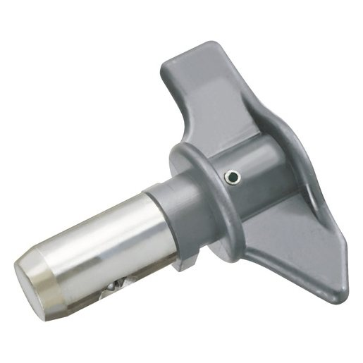
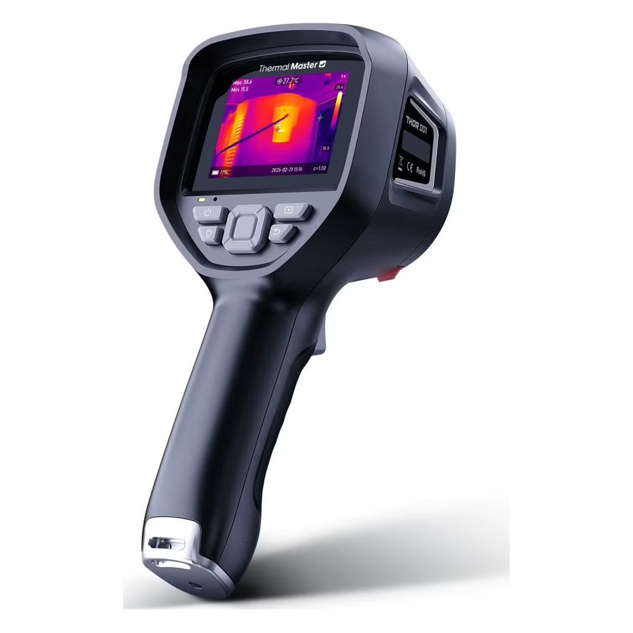
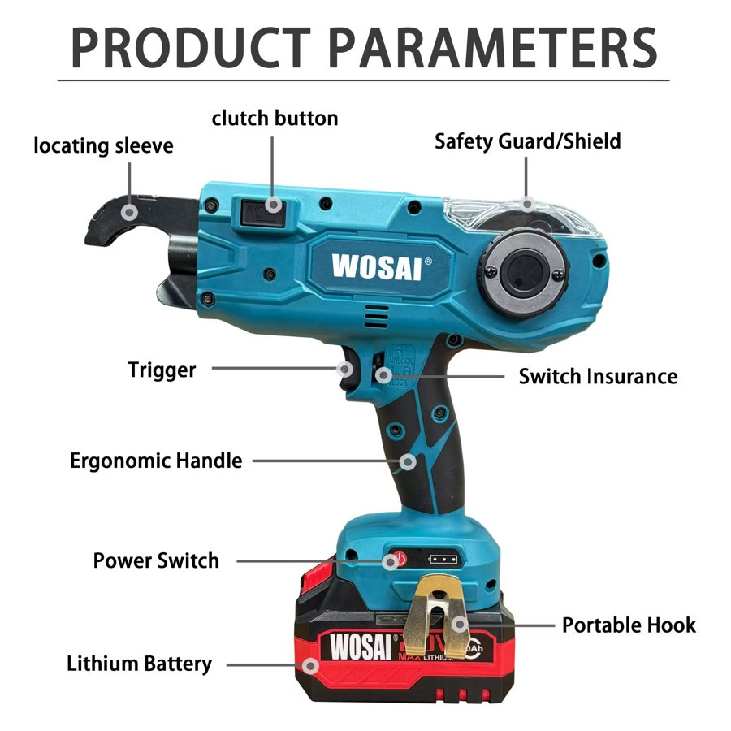

Home / Construction robotics / Wall and ceiling sanding robot (putty surfaces)

Illustration similar – shows the product type.
Construction robotics
Wall and ceiling sanding robot (putty surfaces)
Automatically sands puttied wall and ceiling surfaces up to 3.3–6 m working height with integrated dust extraction.
The sanding robot works puttied wall and ceiling surfaces automatically up to 3.3 to 6 m working height with integrated dust extraction; it delivers uniform surfaces for the following coating and reduces painters' dust exposure. CE conformity, EMC and battery testing (UN 38.3) are mandatory.
Technical data
| Working height | 3.3 / 4.5 / 6.0 m |
|---|---|
| Area output | typ.; 100–250 m²/h |
| Dust extraction | Integrated, dust class M |
| Power supply | Battery, typ.; 4 h; charger 230 V / 50 Hz |
| Operation | Tablet / app, wall scan via sensor |
| Ingress protection | min.; IP54 |
| Customs tariff number (HS) | 84795000 |
EU standards and regulations
2006/42/EG / (EU) 2023/1230Machinery Directive (until 19 Jan 2027) / Machinery Regulation (from 20 Jan 2027)EN ISO 12100Safety of machinery – General principles for design, risk assessmentEN 60335-2-69Vacuum cleaners – dust class M (extraction)TRGS 519Asbestos: demolition, refurbishment or maintenance workTRGS 559Mineral dust (respirable quartz)2014/30/EUEMC Directive (EN 61000-6-2 / -6-4)DIN 18363VOB/C – Painting and coating works (substrate preparation)UN 38.3 / IEC 62619Lithium-ion batteries – transport tests and safety for industrial batteries
Goes well with
More products in this category

Autonomous floor tile paving robot (large format)Autonomously lays large-format tiles in thin-bed mortar on level sub-floors and relieves tilers of heavy slabs.

Wall tile paving robot (interior walls, thin-bed)Bonds wall tiles in thin-bed adhesive on prepared interior walls and relieves tilers of strenuous wall work.

Bricklaying / masonry robotLays masonry units in bond and applies mortar; for large wall areas in building construction with high repeatability.

Interior wall and ceiling spraying robot (putty + latex paint)Automatically applies putty and latex paint to interior walls and ceilings up to 3.2 m working height.

Ceiling drilling robot (BIM-driven, with dust extraction)Drills anchor and dowel holes in ceilings and walls under BIM control with integrated dust extraction.

Layout and scribing robot (total-station or RTK guided)Transfers CAD/BIM plans true to scale onto the floor and automatically marks walls, axes and installation points.

Concrete troweling and screeding robot (laser height control)Levels and trowels fresh screed and concrete under laser height control and replaces manual screeding and troweling.

Airless spray tip set, reversible (6 sizes, e.g. 211-523) with filter setSix reversible tungsten carbide airless tips for common tip guards plus filters, for wall and ceiling coatings.

SDS-plus hollow drill bit with dust extraction, Ø 12 mm x 350 mm (carbide, for dust class M extractors); Ø 14/16 mm as variantHollow drill bit with SDS-plus shank that carries drilling dust through the shaft into a dust class M extractor.

Mini prism system with prism pole, set (for total stations, with connector, bubble and bag); 360-degree version on requestMini prism system with 25.4 mm prism, circular bubble and pole for stakeout and layout work with a total station.

Window-cleaning robot (household, suction)Suction robot for windows and glass, wet and dry cleaning.

Handheld thermal imaging camera (512x384, building inspection)Handheld camera for detecting thermal bridges, leaks and moisture.

Electric site transport cart (tipping tray)Battery-powered carrier for rubble, sand and building material.

Cordless rebar tying toolCordless tool that ties rebar crossings with wire automatically.

Back-support exoskeleton (power assist suit, industrial)Wearable lifting aid that relieves the lower back.

Self-leveling 360° green line laserGreen multi-line laser for aligning tiles, walls and ceilings.